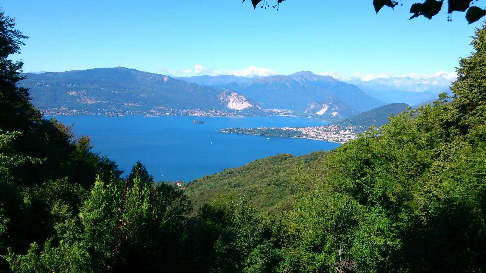

Laveno-Mombello · Lago Maggiore
I sapori della tradizione, con vista sul lago
Una villa del 1882 diventata locanda nel 1945, a Casere sopra Laveno-Mombello. Cucina casalinga: pasta all'uovo fatta in casa, polenta, selvaggina e dolci della casa.
La Capanna
Una tavola di montagna davanti al camino, o sul balcone del lago
Oggi la Capanna Gigliola è il posto giusto per una cena di lavoro, per un ristoro dopo una camminata in montagna, per un pranzo romantico affacciati sul «più bel balcone del Lago Maggiore» o davanti al camino, nella taverna in sasso e legno.
La cucina è casalinga: antipasti con salumi, sottoli e sottaceti, pasta fatta in casa, polenta con selvaggina e funghi porcini, grigliate, dolci e gelato di produzione propria.
- Alla cartaSpecialità rustiche dal menu, con piatti di selvaggina e polenta.
- Menu fissiDue menu da prenotare in anticipo. Chiedi i dettagli al ristorante.
- All'apertoGli amici a quattro zampe sono benvenuti fuori, non nel locale.


La cucina
Pasta all'uovo, polenta, selvaggina e dolci della casa
Piatti della tradizione di montagna, come li trovi nel menu del ristorante. I prezzi sono quelli del menu online, che può differire da quello proposto in sala.

Paste all'uovo fatte in casa
Tagliatelle al ragù di cinghiale, gnocchetti di pane con ortiche alle erbe aromatiche, mezze maniche di mirtillo con speck croccante.

Dolci fatti in casa
Tiramisù, panna cotta con mirtilli, tortino caldo al cioccolato. Il gelato è di produzione propria, anche con latte di capra.

Selvaggina e brace
Bocconcini di cervo, bruscit di cinghiale, grigliata con salsiccia di cinghiale.

Polenta e montagna
Montanara, ai quattro formaggi, con farina macinata al sasso.
Antipasti con salumi e formaggi, caffè alla valdostana nella coppa dell'amicizia: il menu completo raccoglie tutto.
Sfoglia il menu completoIl panorama
Il lago cambia con le ore
La Capanna sorge a Casere, antico nucleo montano a 768 metri sopra Laveno-Mombello. Da qui lo sguardo scende verso il Lago Maggiore: all'alba, a mezzogiorno, al tramonto, sempre con una luce diversa.


La storia
Dal 1882, un angolo di paradiso sopra il lago
- 1882
Una villa per riposare
La Capanna Gigliola viene fatta costruire dal proprietario della ceramica Revelli di Laveno Mombello, che cercava un «angolo di paradiso» dove riposare il corpo e la mente dopo le giornate di lavoro in riva al lago.
- 1945
Da villa a locanda
Alla fine della seconda guerra mondiale la villa diventa una locanda. La rileva il gestore del bar Giglio, sul golfo di Laveno, allora sede del CAI: la nuova attività prende il nome di Giglio-Là, a indicare la montagna.
- 1970
La famiglia Papini
Dopo alcuni cambi di gestione, Vittorio e Desolina Papini rilevano la Capanna Gigliola. A marito e moglie si aggiungono i figli Daniela e Alessandro.
- 1996
L'ampliamento
Importanti lavori di ampliamento portano la Capanna alla configurazione attuale. E, come dice la famiglia, la storia non si ferma qui.
La galleria
Sala, piatti e panorama
Alcune immagini della Capanna. Tocca una foto per ingrandirla.

Prenota il tuo tavolo
Lavoriamo solo su prenotazione, perché la conduzione è familiare. Il modo più rapido è chiamare o scrivere su WhatsApp. Il martedì il ristorante è chiuso.
0332 602266 Frazione Casere 2, Strada per Vararo, 21014 Laveno-Mombello (VA)